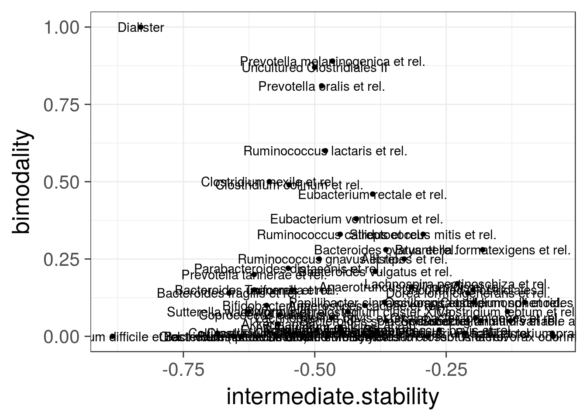
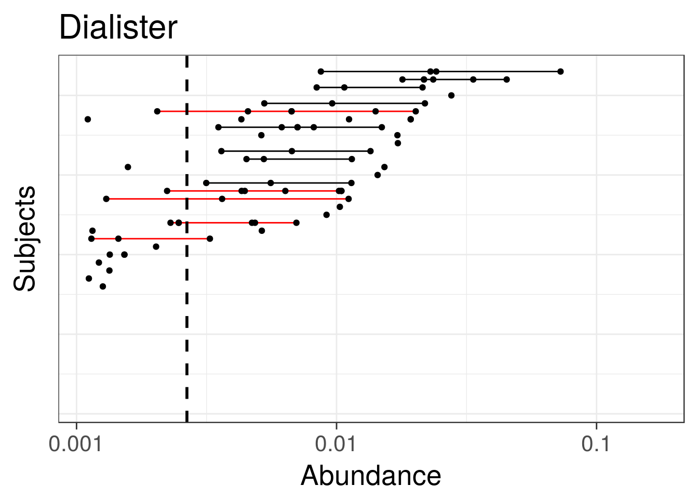
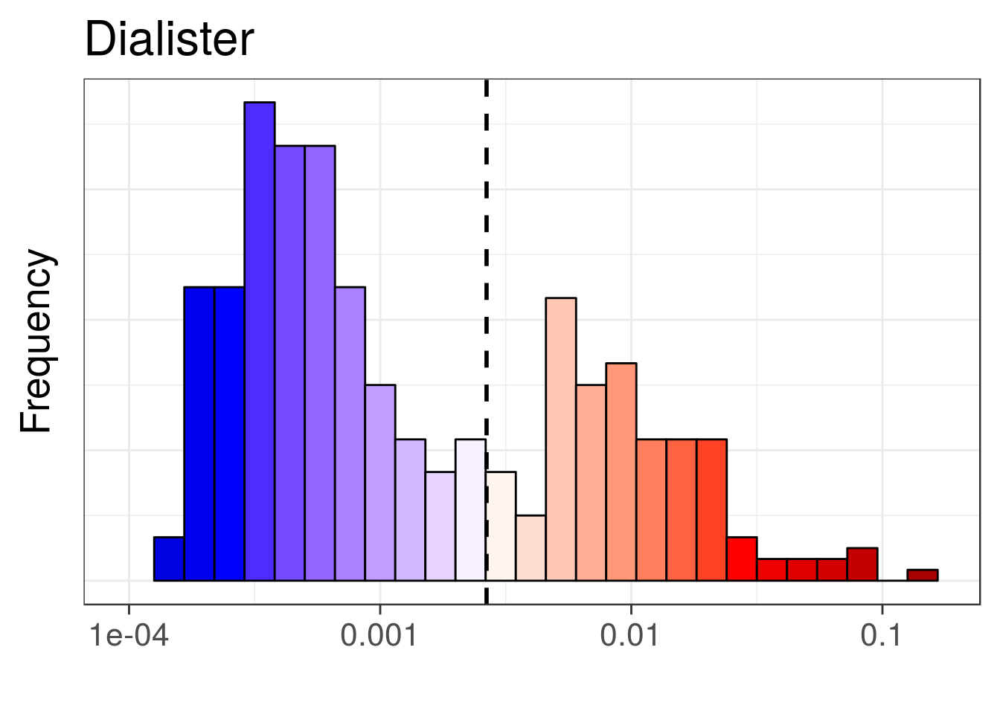

Get example data - HITChip Atlas of 130 genus-like taxa across 1006 healthy western adults. A subset of 76 subjects have also short time series available for temporal stability analysis:
# Load the example data
library(microbiome)
data(atlas1006)
# Rename the example data
pseq <- atlas1006
# Focus on specific DNA extraction method
pseq <- pseq %>% subset_samples(DNA_extraction_method == "r")
# Keep prevalent taxa (HITChip signal >3 in >95 percent of the samples)
pseq <- core(pseq, detection = 10^3, prevalence = .2)
# Use relative abundances
pseq <- transform(pseq, "compositional")
# For cross-sectional analysis, include only the baseline time point:
pseq0 <- baseline(pseq)It has been reported that certain microbial groups exhibit bi-stable abundance distributions with distinct peaks at low and high abundances, and an instable intermediate abundance range. Instability at the intermediate abundance range is hence one indicator of bi-stability. Lahti et al. 2014 used straightforward correlation analysis to quantify how the distance from the intermediate abundance region (50% quantile) is associated with the observed shifts between consecutive time points. This can be calculated with:
intermediate.stability <- intermediate_stability(pseq, output = "scores")Check the bimodality page for more examples on bimodality indicators.
Bimodality of the abundance distribution provides another (indirect) indicator of bistability, although other explanations such as sampling biases etc. should be controlled. Multiple bimodality scores are available.
Multimodality score using potential analysis with bootstrap
# Bimodality is better estimated from log10 abundances
pseq0.log10 <- transform(pseq0, "log10")
set.seed(4433)
bimodality.score <- bimodality(pseq0.log10, method = "potential_analysis", bs.iter = 100, peak.threshold = 10, min.density = 10)The analysis suggests that bimodal population distribution across individuals is often associated with instable intermediate abundances within individuals. The specific bi-stable groups in the upper left corner were suggested to constitute bistable tipping elements of the human intestinal microbiota in Lahti et al. Nat. Comm. 5:4344, 2014:
taxa <- taxa(pseq0)
df <- data.frame(group = taxa,
intermediate.stability = intermediate.stability[taxa],
bimodality = bimodality.score[taxa])
theme_set(theme_bw(20))
p <- ggplot(df, aes(x = intermediate.stability, y = bimodality, label = group)) +
geom_text() +
geom_point()
print(p)
Identify potential minima in cross-section population data as tipping point candidates.
# Log10 abundance for a selected taxonomic group
# Pick the most bimodal taxa as an example
tax <- names(which.max(bimodality.score))
# Detect tipping points detection at log10 abundances
x <- log10(abundances(pseq)[tax,])
# Bootstrapped potential analysis to identify potential minima
potential.minima <- potential_analysis(log10(abundances(pseq)[tax,]))$minima
# Same with earlywarnings package (without bootstrap ie. less robust)
# library(earlywarnings)
# res <- livpotential_ews(x)$min.points
# Identify the potential minimum location as a tipping point candidate
# and cast the tipping back to the original (non-log) space:
tipping.point <- 10^potential.minima
print(tipping.point)## [1] 0.002657916Pick subset of the HITChip Atlas data set and plot the subject abundance variation lineplot (Variation lineplot) and Bimodality hotplot for a given taxon as in Lahti et al. 2014. The bi-stable Dialister has bimodal population distribution and reduced temporal stability within subjects at intermediate abundances.
# Variation line plot:
# Indicates the abundance variation range
# for subjects with multiple time points
pv <- tipplot(pseq, tax, tipping.point = tipping.point)
print(pv)
# Bimodality hotplot:
# Consider a unique sample from each subject: the baseline time point
ph <- hotplot(pseq0, tax, tipping.point = tipping.point)
print(ph)